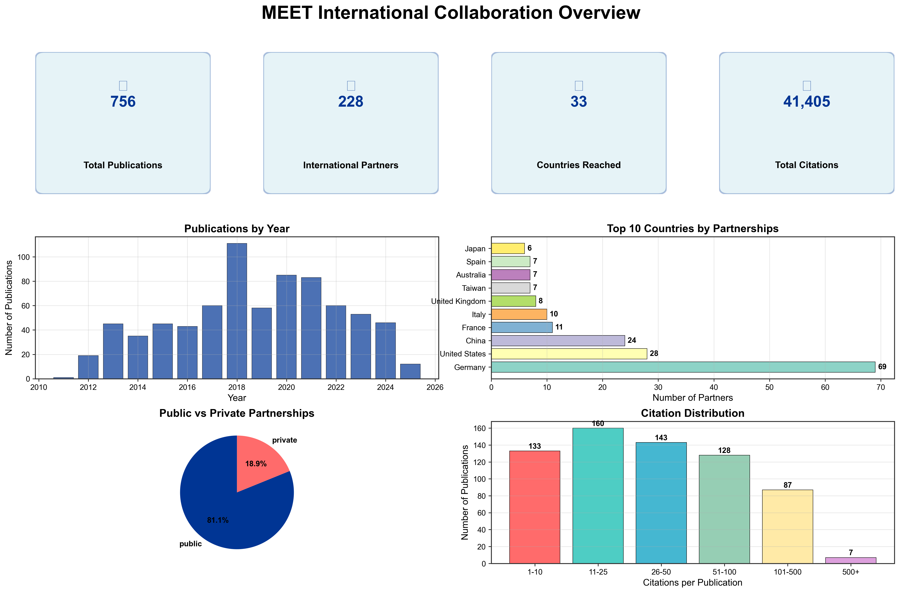
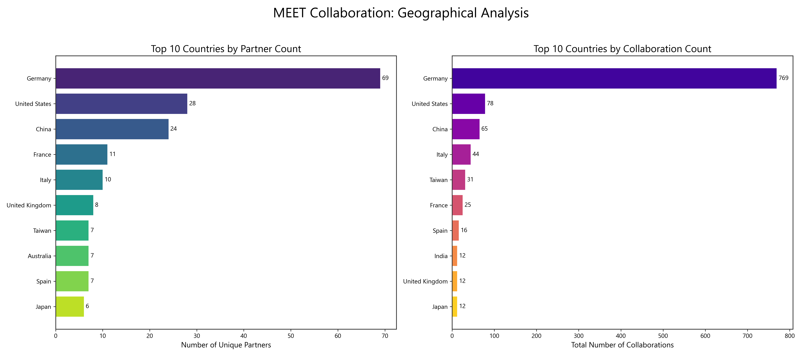
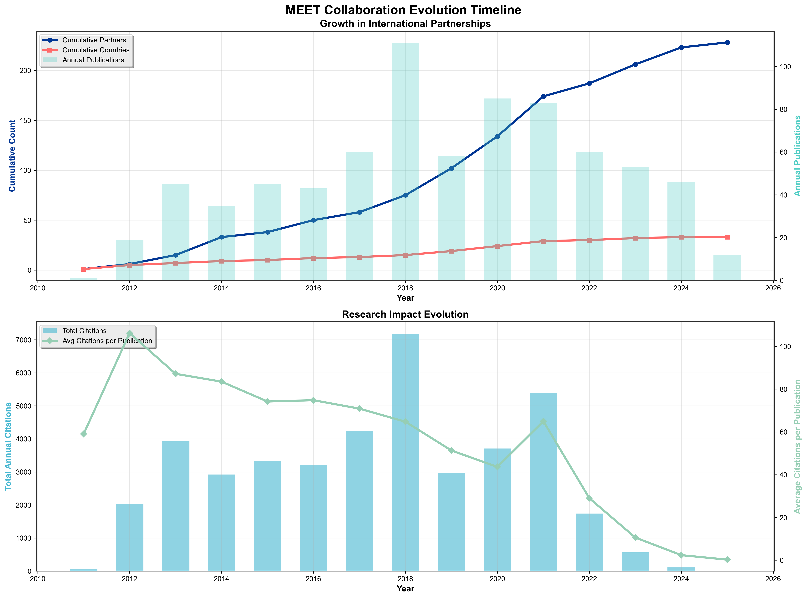
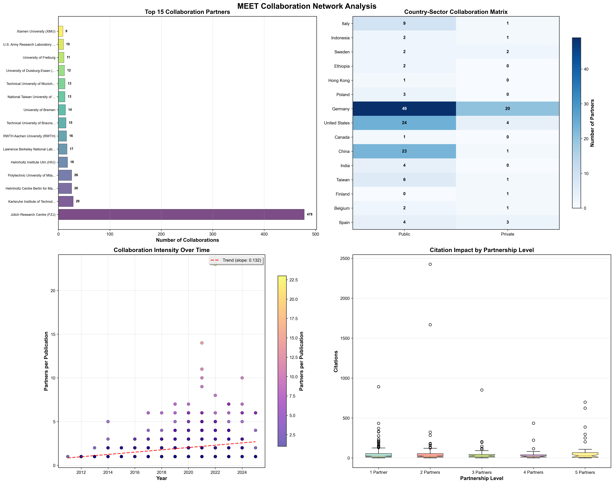
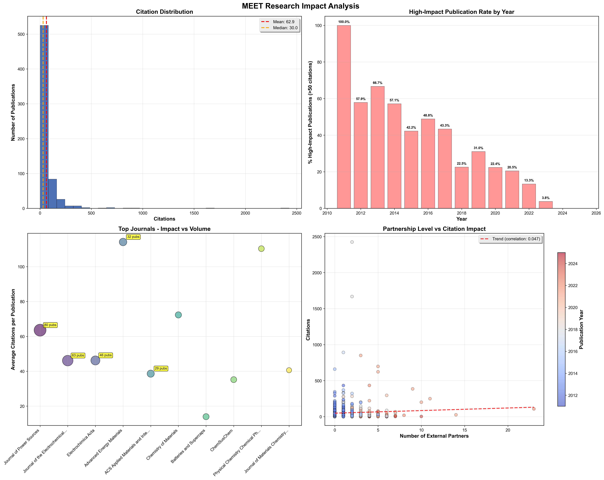

A comprehensive overview of MEET's collaborative efforts, showcasing key metrics and trends.
Analysis of where MEET's partners are located, highlighting top countries and continental distribution.
The growth of the network and research impact over the years.
Insights into the structure of the collaboration network, including top partners and sector analysis.
A look at the citation metrics and impact of the published research.
